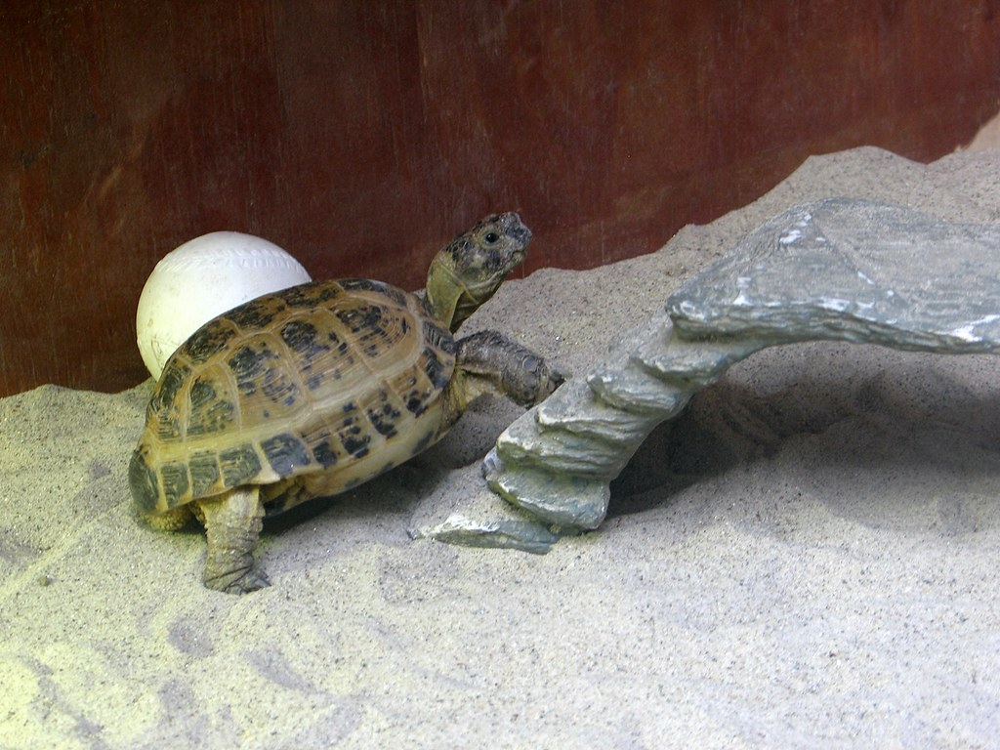
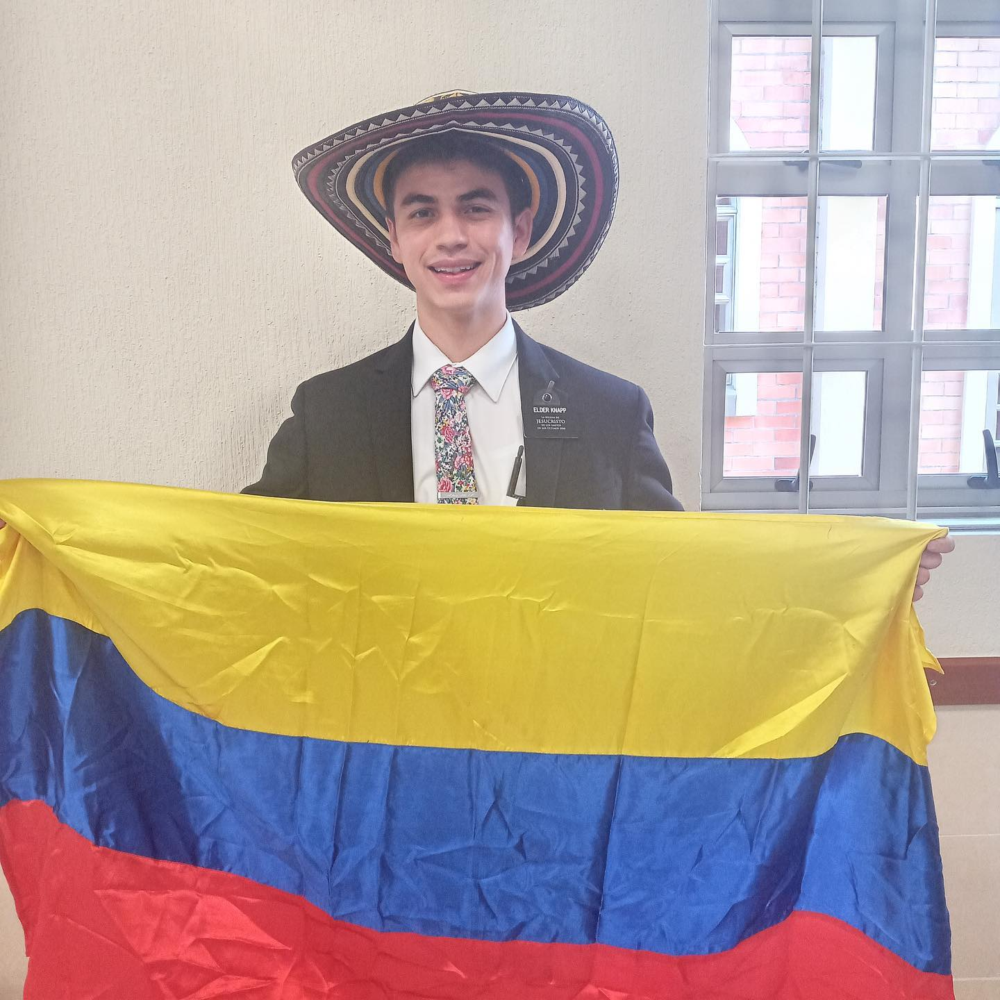

I am 21 years old and a sophomore studying at Brigham Young University. I served a mission for my church in Colombia and Southern Utah. I am the youngest of three brothers and we are all married now. My wife is named Michelle DeMoss and we got married November 2021. The picture above is from our temple sealing in South Jordan.
My hobbies include practicing and watching sports, (especially basketball), playing the french horn, and eating. I included a video of my last performance playing in a woodwind quintet.
I also particularly enjoy animals. My favorite animal is the tortoise. I used to own one as a pet and named him Speedy. Unfortunately he ran away and hasn't been seen since.
Résumé
- Education
- Westivew High School, Diploma
- Brigham Young University, Pre-Accounting Candidate
- 3.94 GPA
- Experience
- GQ Law, Receptionist
- Treasury Clerk, BYU Treasury Services
- BYU Aspen Grove, On-Campus Internship
- Skills
- Spanish, near-native speaking
- Database design and development
- Entity-relationship diagramming
- Structured query language(SQL)
- Tableau
- Excel Solver, PivotTables, and Charts
- Flowchart diagramming
- HTML, CSS, Bootstrap
- Visual Basic for Applications (VBA) programming in Excel
Woodwind Quintet Performance
Russian Tortoise
Chruch Mission in Colombia
High School Basketball